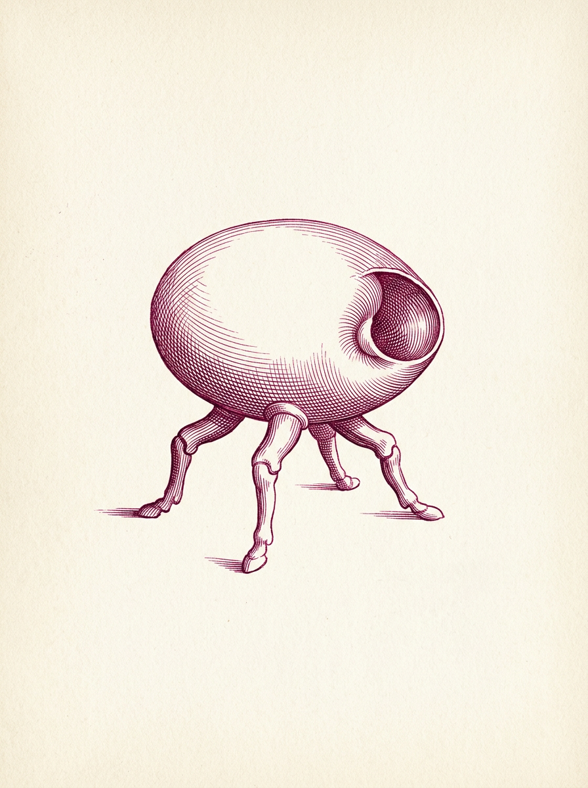
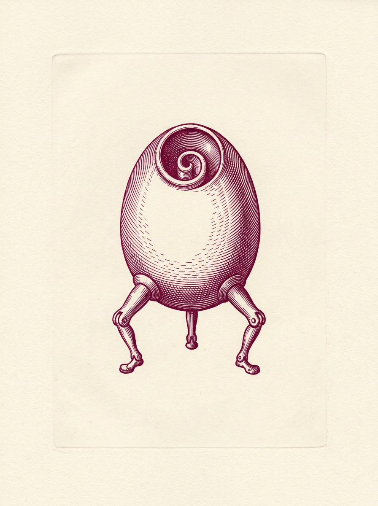
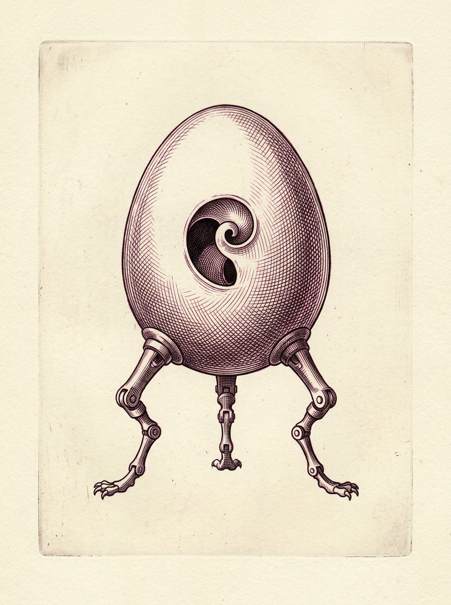
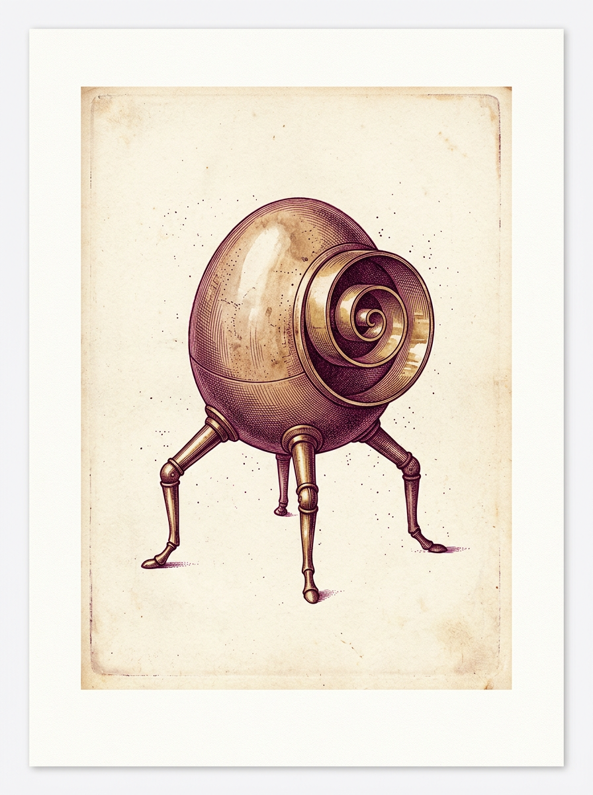

v2 완료 evidence, provider journal, local/backup PNG 검증을 통과한 연락표입니다.

style/master-candidate-01hairline contour engraving with restrained parallel hatching and broad untouched paperQA: LIMB_COUNT_DIFFERS_FROM_PROMPT3cadedb377db1e299bf2ac355404df3c8c092a3d229665c5e519243bbb5efde3

style/master-candidate-02crisp burin linework with short curved hatching that follows the specimen formQA: FAINT_PLATE_EDGE_DESPITE_NO_BORDER_PROMPTd8cb1bb1e5864eefdf543b8b371b0d8242b1aa8294b53a888ca0d064b668abd1

style/master-candidate-03fine crossed hatchwork with alternating shallow angles and clean highlight gapsQA: VISIBLE_PLATE_BORDER_DESPITE_NO_BORDER_PROMPTd04e65e15ab75c94a55b6929e74fe40b17b429ff166584ff2f572d4606b09a8f

style/master-candidate-04delicate etched contour lines with sparse stipple accents between hatch groupsQA: STRONG_FRAMED_SHEET_MAT_SHADOW_DESPITE_NO_BORDER_PROMPT071859618b0b8a6630950e920de00bb9e65d8a412eca24378379446388fae0be